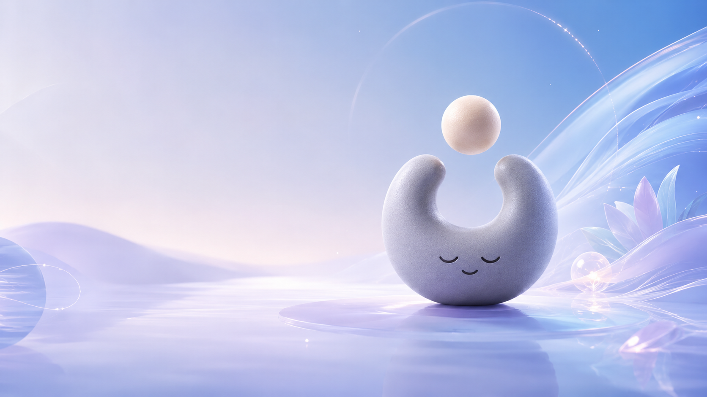
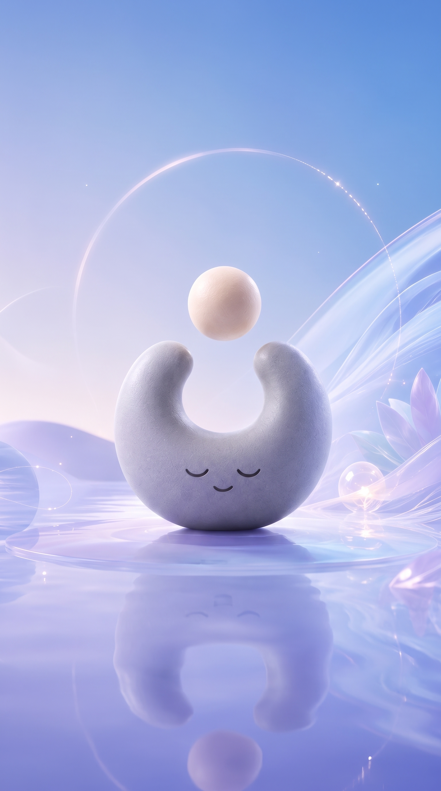
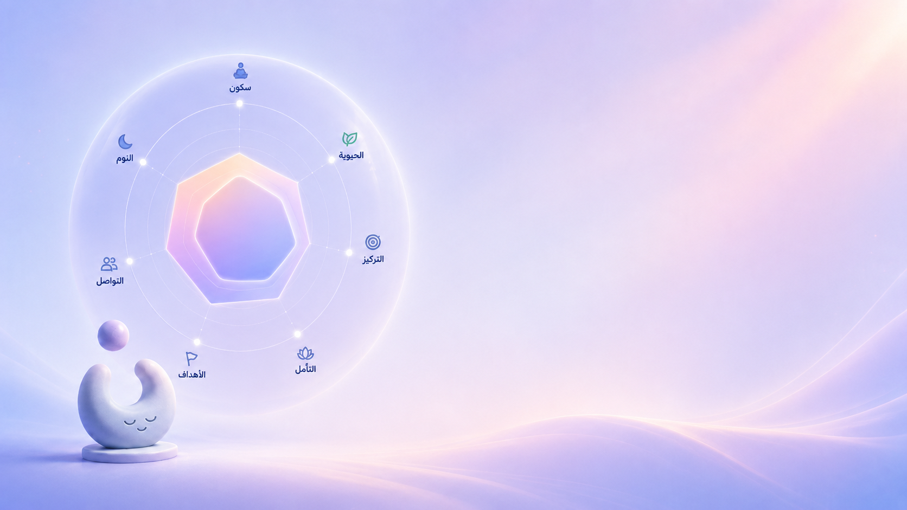
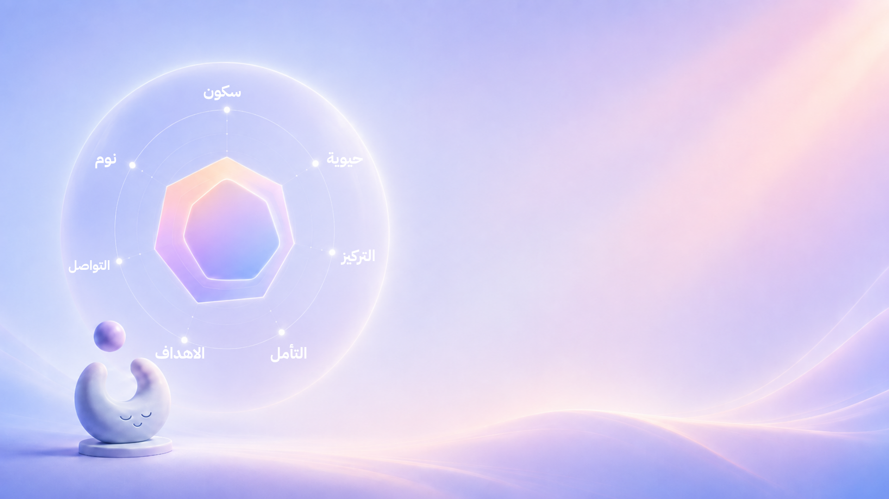
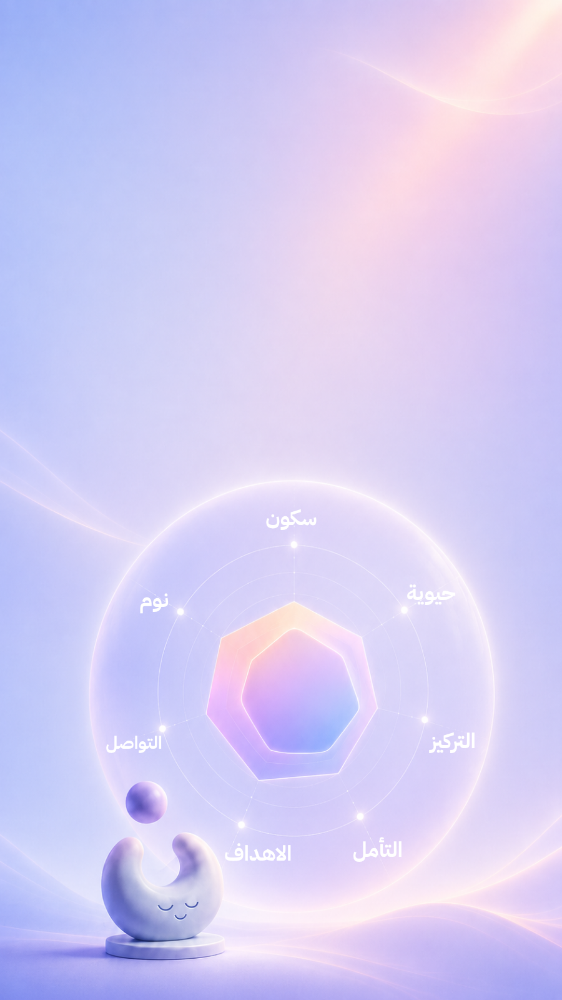

▶
الأكثر تميّزًا
تسجيلات صوتية أصلية
جلسات للهدوء والنوم والتركيز، ودروس قصيرة — مكتوبة ومسجّلة بالعربية من البداية، لا ترجمة ولا صوت آلي.


تنفّس بهدوء، نم أعمق، ركّز أكثر، وابنِ عاداتك اليومية. كل ما تحتاجه لعافيتك النفسية في مكان واحد — بالعربية، كل يوم.
من لحظة استيقاظك إلى لحظة نومك — أداة لكل حاجة، وكلها تعمل معًا.
جلسات للهدوء والنوم والتركيز، ودروس قصيرة — مكتوبة ومسجّلة بالعربية من البداية، لا ترجمة ولا صوت آلي.
من التنفّس البطني الأساسي إلى ٤-٧-٨ قبل النوم، ولكل تمرين وقته المناسب في يومك.
قوالب جاهزة بتكرار وتذكير مقترح، أو عادة تصنعها بنفسك — والمتابعة تظهر على خريطتك.
صمّم يومك: وقت استيقاظك، وقت تهدئتك، ودقائق تخصّها لنفسك. بلا إلحاح، وبلا لوم.
دقائق قصيرة لتدريب التركيز أو للاسترخاء، مثل «التقط الفكرة» — تمرين حقيقي، بلا ضغط.
أفرغ ما في ذهنك، وأجب على سؤال واحد لكل جانب كل أسبوعين لتبقى خريطتك صادقة.



إجاباتك في البداية ترسم نقطة انطلاقك، وكل جلسة تنفّس أو استماع أو عادة تحقّقها تحرّك الخريطة. مرآة صادقة لتقدّمك — بلا أرقام تحاسبك، وبلا مقارنة بأحد.
تمرين تنفّس كامل، ومقطع من تسجيلاتنا الصوتية. الآن، من هنا.
تنفّس براحتك — إن كنتِ حاملًا أو لديك حالة قلبية أو تنفّسية، تجاوز الحبس وتنفّس ببطء فقط.
تطبيقات رائعة، لكنها إما مترجمة، أو تغطّي جزءًا واحدًا من يومك. سُكون يغطّي اليوم كله بالعربية.
مقارنة بناءً على الميزات المعلنة لهذه التطبيقات في يوليو ٢٠٢٦. الأسماء التجارية ملك أصحابها.
نفتح الأبواب على دفعات صغيرة. اتركي بريدك ونخبرك أول ما يصبح متاحًا في بلدك.
التطبيقات الجيدة كانت بلغة أخرى، والترجمة كانت تفقد الدفء. أردنا شيئًا يعرف كيف نتحدث عن أنفسنا، ويرافقنا طول اليوم لا في جلسة واحدة: تنفّس عندما يضيق الصدر، صوت هادئ قبل النوم، عادة صغيرة تُبنى بلا لوم، وخريطة تُظهر أنك تتقدّم. هذا هو سُكون.
لا. كل نص مكتوب بالعربية أولًا — الأسئلة، الجلسات، ورسائل الطمأنينة — بلهجة دافئة تناسب الخليج، ثم يُسجّل صوتيًا. الإنجليزية تأتي لاحقًا كترجمة لا كأصل.
لا. سُكون تطبيق للعافية اليومية، ولا يقدّم تشخيصًا أو علاجًا. إن كنت تمرّ بضيق شديد، نعرض لك موارد الدعم المتاحة في بلدك مباشرة.
لا. لا نلومك على يوم فائت، ولا نضغطك بعدّادات. تعود متى شئت، وخريطتك تنتظرك كما هي.
الخريطة مرآة لا حكم. لا نكافئك على شعور معيّن، ولا نعرض أرقامًا تقارن بها نفسك — نعرض شكل رحلتك وأين تنمو.
نفتح على دفعات صغيرة أولًا لضمان جودة المحتوى الصوتي. اترك بريدك ونراسلك أول ما يصبح متاحًا في بلدك.